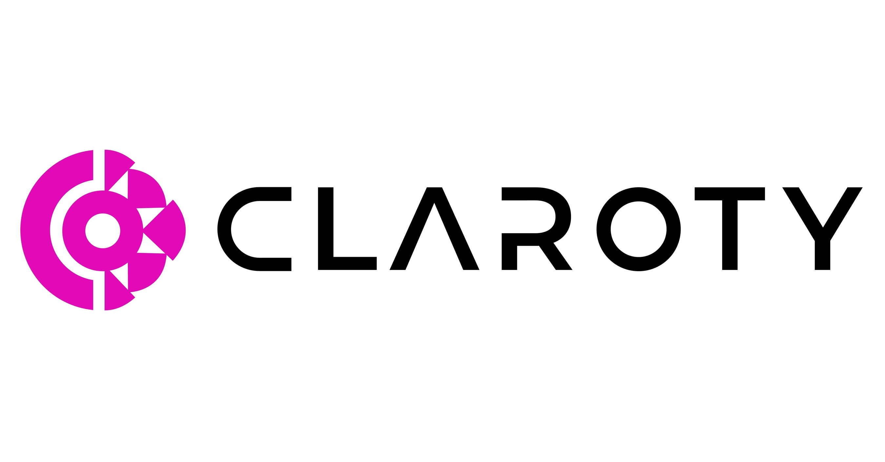

Claroty est une entreprise spécialisée dans la sécurité industrielle,
offrant des solutions conçues pour protéger les systèmes de contrôle industriels (ICS) contre les cybermenaces.
Les systèmes de contrôle industriels sont utilisés dans divers secteurs tels que l'énergie, la fabrication,
les infrastructures critiques, etc., pour superviser et contrôler les processus industriels.
Les principaux aspects de la technologie Claroty incluent :
- Détection des menaces industrielles : Claroty utilise des méthodes avancées de détection des menaces spécifiquement adaptées aux environnements industriels. Cela comprend la surveillance du trafic réseau, l'analyse du comportement des dispositifs, et la détection d'anomalies potentielles.
- Visibilité du réseau industriel : Claroty offre une visibilité approfondie sur le réseau industriel, ce qui permet aux entreprises de mieux comprendre leur architecture, les dispositifs connectés, et les communications entre les différents composants.
- Gestion des vulnérabilités : La plateforme Claroty permet la gestion proactive des vulnérabilités en identifiant et en évaluant les faiblesses potentielles dans les systèmes de contrôle industriel.
- Réponse aux incidents : En cas de détection d'une menace, Claroty propose des fonctionnalités de réponse aux incidents, permettant aux équipes de sécurité de réagir rapidement pour atténuer les risques.
- Intégration avec d'autres solutions de sécurité : Claroty peut souvent s'intégrer avec d'autres solutions de sécurité déjà en place dans l'infrastructure informatique de l'entreprise, améliorant ainsi la cohérence et l'efficacité des mesures de sécurité globales.
Avantages de la technologie Claroty :
- Protection spécialisée pour les environnements industriels : Claroty se concentre sur les systèmes de contrôle industriels, offrant une protection spécialisée adaptée aux défis uniques de ces environnements.
- Visibilité approfondie : La plateforme Claroty offre une visibilité approfondie sur les réseaux industriels, permettant aux organisations de mieux comprendre et surveiller leurs infrastructures.
- Détection avancée des menaces : La technologie de détection des menaces de Claroty utilise des techniques avancées pour identifier les activités suspectes et les menaces potentielles.
Inconvénients de la technologie Claroty :
- Complexité d'implémentation : Les solutions de sécurité industrielle peuvent parfois être complexes à mettre en œuvre, en particulier dans des environnements où la continuité opérationnelle est critique.
- Coût : Les solutions de sécurité spécialisées peuvent être coûteuses, ce qui peut être un facteur limitant pour certaines organisations, en particulier les petites et moyennes entreprises.
- Dépendance à l'égard des mises à jour : Comme pour toute solution de sécurité, la dépendance à l'égard des mises à jour fréquentes et des correctifs de sécurité est un aspect à prendre en compte.